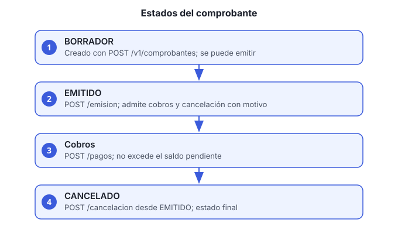

Objetivo: crear un comprobante para una orden de venta, emitirlo, registrar el cobro del cliente y, si hace falta, cancelarlo.
Servicio: facturacion-pagos-ms, bajo
/facturacion-pagos-ms/v1/comprobantes.
Roles: FINANZAS para crear, emitir,
cobrar y cancelar. FINANZAS o VENTAS para
consultar.

Crea el comprobante en borrador:
curl -s -X POST http://HOST/facturacion-pagos-ms/v1/comprobantes \
-H "Authorization: Bearer ACCESS_TOKEN" -H "Content-Type: application/json" \
-d '{"ordenId":"ORDEN_VENTA_ID","moneda":"MXN","subtotal":1200.00}'Anota el id y el folio de la
respuesta.
Emite el comprobante. Solo los borradores se emiten:
curl -s -X POST http://HOST/facturacion-pagos-ms/v1/comprobantes/COMPROBANTE_ID/emision \
-H "Authorization: Bearer ACCESS_TOKEN"Emitir cambia el estado a EMITIDO. Intentar emitir uno que ya no es borrador responde error de regla de negocio.
Consulta comprobantes pendientes de cobro (rol
FINANZAS o VENTAS). Devuelve los emitidos con
saldo, con un máximo de 15 resultados, los más recientes primero:
curl -s "http://HOST/facturacion-pagos-ms/v1/comprobantes/pendientes-cobro" \
-H "Authorization: Bearer ACCESS_TOKEN"También puedes buscar por folio:
GET /v1/comprobantes?folio=FOLIO.
Registra el cobro (rol FINANZAS).
Solo en comprobantes emitidos:
curl -s -X POST http://HOST/facturacion-pagos-ms/v1/comprobantes/COMPROBANTE_ID/pagos \
-H "Authorization: Bearer ACCESS_TOKEN" -H "Content-Type: application/json" \
-d '{"monto":1200.00,"fechaPago":"2026-11-05","referencia":"TRANSF-998877"}'pendientes-cobro.Cancela el comprobante si es necesario (rol
FINANZAS). Solo emitidos, y el motivo es obligatorio:
curl -s -X POST http://HOST/facturacion-pagos-ms/v1/comprobantes/COMPROBANTE_ID/cancelacion \
-H "Authorization: Bearer ACCESS_TOKEN" -H "Content-Type: application/json" \
-d '{"motivo":"Error en el subtotal"}'Un comprobante cancelado no admite cobros. Para corregirlo, crea un comprobante nuevo.
GET /v1/comprobantes/COMPROBANTE_ID muestra el estado
correcto.pendientes-cobro.| Síntoma | Causa | Qué hacer |
|---|---|---|
| Error al emitir | El comprobante no está en borrador | Consulta su estado; si ya está emitido, no hace falta emitirlo |
| Error al cobrar | Está en borrador o cancelado | Emítelo primero; un cancelado requiere comprobante nuevo |
El pago excede el saldo pendiente |
El monto es mayor al saldo | Corrige el monto |
| No aparece en pendientes de cobro | Ya está pagado o no está emitido | Consulta el comprobante por id |